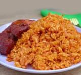

Jollof Rice
Home
Description

A classic West African rice dish made with tomatoes, onions, and spices. Perfect for any occasion!
Ingredients
- 2 cups long-grain rice
- 4 tomatoes
- 1 onion
- Tomato paste
- Oil, salt, and seasonings
Steps
- Blend tomatoes and onions.
- Cook sauce, add seasoning.
- Add rice and water.
- Simmer until rice is done.